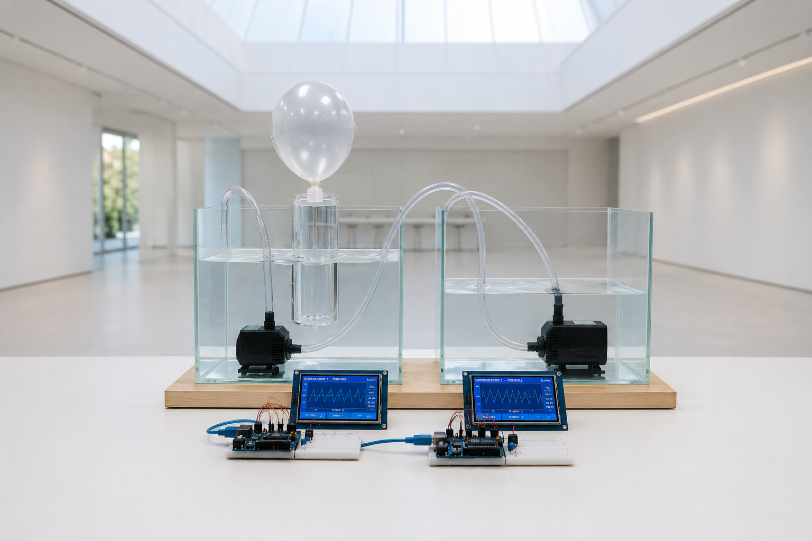
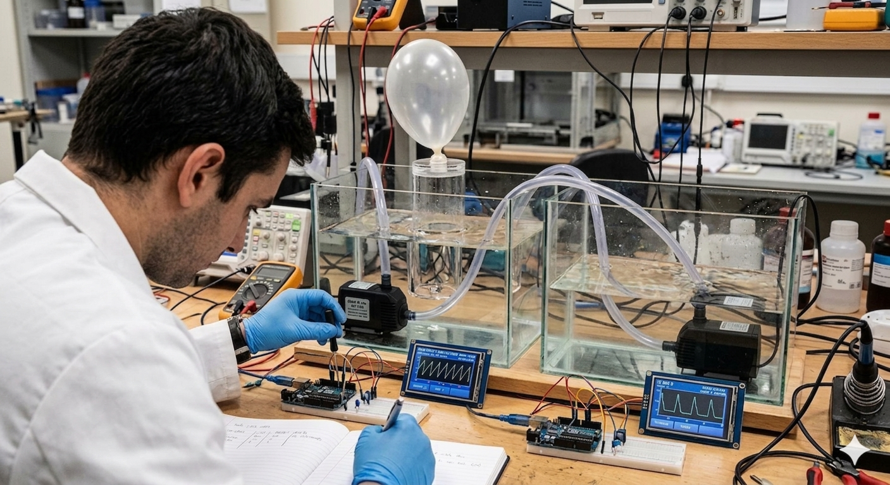
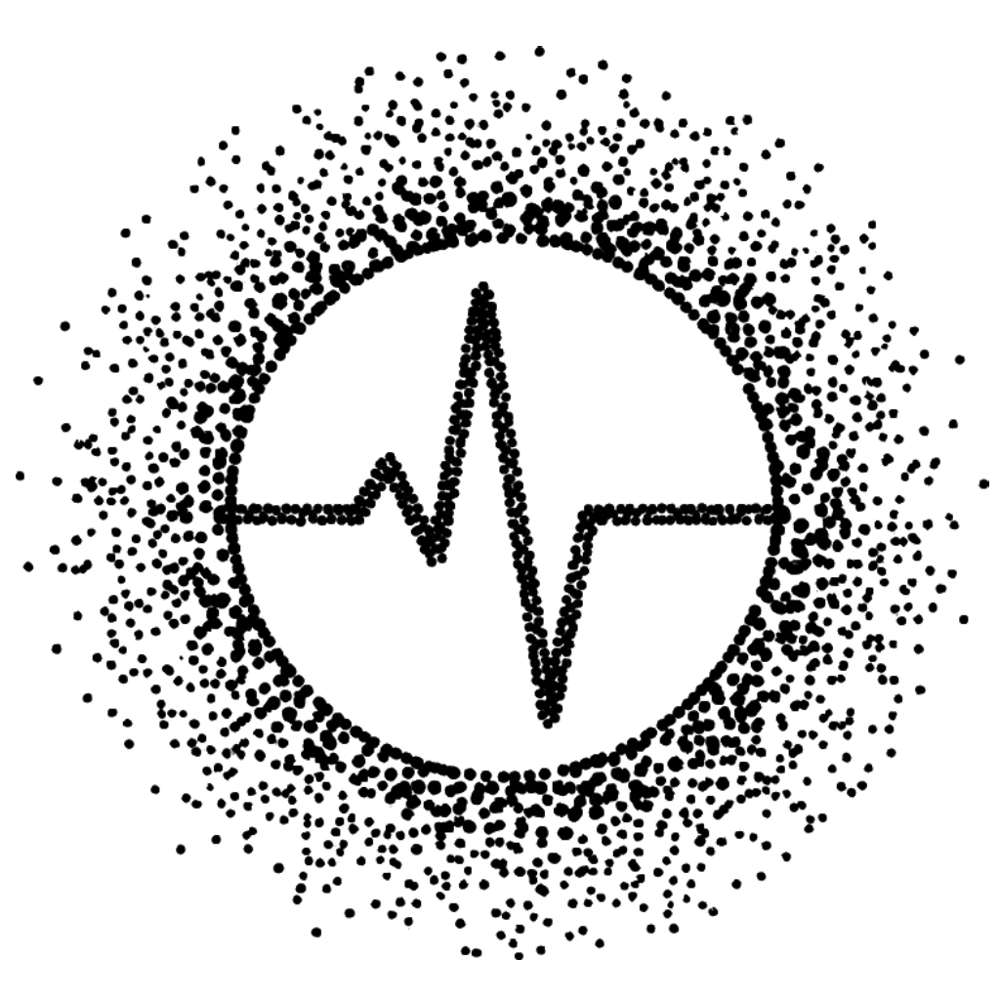

Sobre REAMIMA About REAMIMA
REAMIMA es un equipo de ingeniería e I+D+i centrado en resolver problemas que la industria considera fuera de alcance. Hardware, electrónica, control en tiempo real y software de alto rendimiento. REAMIMA is an engineering and R&D team focused on solving problems the industry considers out of reach. Hardware, electronics, real-time control and high-performance software.

MisiónMission
Construir lo que la ingeniería convencional descartó como inviable. Volver simple lo complejo. Devolver el control técnico al usuario. To build what conventional engineering discarded as unviable. To make the complex simple. To return technical control to the user.
Trabajamos en la frontera donde la electrónica de bajo coste, el procesamiento embebido y el diseño riguroso convergen para producir sistemas que parecen imposibles — y simplemente funcionan. We operate at the frontier where low-cost electronics, embedded processing and rigorous design converge into systems that seem impossible — and simply work.
Principios de ingeniería Engineering principles
01 / Rigor
Lo difícil, primero The hard part, first
Empezamos por la restricción técnica más severa. Si no se sostiene ahí, no se sostiene en ningún sitio. We start with the toughest technical constraint. If it doesn’t hold there, it doesn’t hold anywhere.
02 / Soberanía
Procesamiento en el borde Edge processing
Los datos se procesan donde se generan. Sin servidores intermedios. La privacidad es una propiedad del sistema, no una promesa. Data is processed where it is generated. No intermediate servers. Privacy is a system property, not a promise.
03 / Apertura
Hardware abierto cuando importa Open hardware when it matters
Cuando un sistema puede salvar vidas, su diseño se publica. La certificación OSHWA es la prueba documental, no la insignia decorativa. When a system can save lives, its design is published. OSHWA certification is the documentary proof, not a decorative badge.
04 / Síntesis
La complejidad vive dentro Complexity lives inside
El usuario nunca ve la dificultad. Lo que llega a su mano es claro, sereno y útil. The user never sees the difficulty. What reaches their hand is clear, calm and useful.

Capacidades técnicas Technical capabilities
Diseño de prototipos rápidos sobre Arduino, ESP32, M5Stack, Portenta, Raspberry y PLC industriales (Simatic, Logo, IOT2020). Integración de sensores, control de relés, electrónica de bajo coste con tolerancia industrial. Rapid prototype design on Arduino, ESP32, M5Stack, Portenta, Raspberry and industrial PLCs (Simatic, Logo, IOT2020). Sensor integration, relay control, low-cost electronics with industrial tolerance.
Procesamiento de señal en tiempo real, algoritmos en el dispositivo, arquitecturas sin servidor. Aplicaciones móviles que viven en el teléfono y respetan la privacidad por construcción. Real-time signal processing, on-device algorithms, server-less architectures. Mobile applications that live on the phone and respect privacy by construction.
La mayoría diseña piezas. Nosotros diseñamos sistemas. La visión de conjunto no se improvisa — se construye con años de proyectos reales. Most people design parts. We design systems. A holistic vision isn't improvised — it's built through years of real projects.
Algunos proyectos requieren más que ingeniería — requieren un ecosistema. Contamos con partners industriales de primer nivel para escalar cuando el proyecto lo exige, sin que el cliente tenga que buscarlo. Some projects require more than engineering — they require an ecosystem. We work with top-tier industrial partners to scale when the project demands it, so the client doesn't have to look for them.
Proyectos en curso Current projects
Software de optimización del rendimiento físico que construye el patrón único de entrenamiento de cada persona a lo largo del tiempo. Procesamiento en el dispositivo. Cero servidores. Physical performance optimization software that builds each person’s unique training pattern over time. On-device processing. Zero servers.

Una nueva métrica de entrenamiento dentro de Cardistream. El número que sintetiza tu gemelo digital de entrenamiento — lo que ningún entrenador puede calcular a ojo. A new training metric inside Cardistream. The number that synthesises your training digital twin — what no coach can calculate by eye.
OSHWA · Arduino Global Conference · 2020
En 2020, REAMIMA diseñó un respirador de emergencia con materiales de almacén. Hardware abierto, certificado por OSHWA, presentado en la conferencia global de Arduino. La historia explica el método. In 2020, REAMIMA designed an emergency ventilator from off-the-shelf materials. Open hardware, OSHWA-certified, presented at the Arduino global conference. The story explains the method.